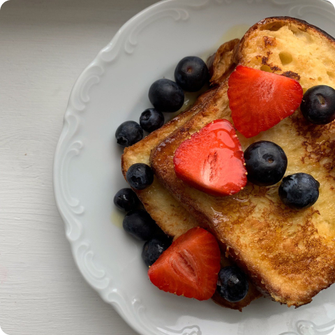

Французские тосты
Завтрак
20 мин.
Ингредиенты:
- яйцо - 2 шт.
- молоко - 200 мл.
- тосты - 4 шт.
- сахар - 2 ст.л.
- ягоды - 100 гр.
- сироп топинамбура - 3 ст.л.
Описание
Смешать молоко с сахаром, добавить яйца, тщательно все взбить. Обмакнуть тосты в смесь и жарить на сливочном масле до золотистой корочки.
Полить сверху сиропом топинамбура и украсить ягодами.